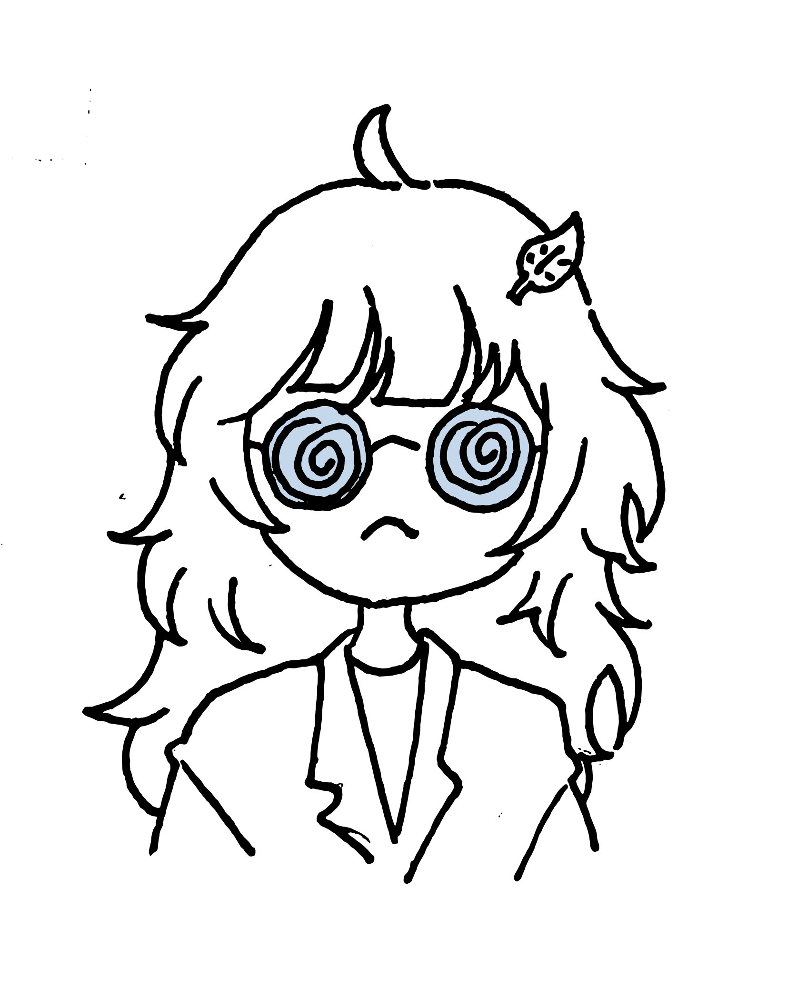
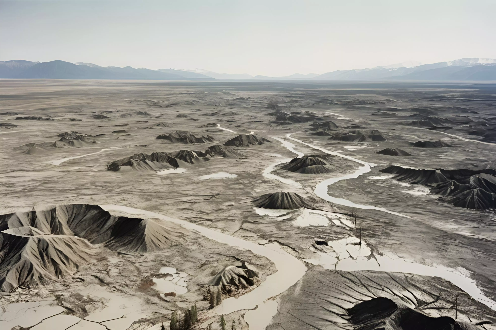

Seoyul Lee est une pionnière dans l'étude des plantes qui ont évolué dans un environnement en mutation rapide en raison du réchauffement climatique au 22e siècle. Elle a obtenu son diplôme en botanique à l'Université de Harvard en 2096, puis son doctorat en biologie environnementale à l'Université d'Oxford en 3103. Actuellement, elle travaille comme chercheuse à l'Institut Global d'Adaptation Climatique. Elle explore comment des plantes comme le Machilus thunbergii, le Neolitsea sericea, la Dicranopteris linearis et les cactus se sont adaptées et ont évolué dans des conditions climatiques extrêmes, cherchant ainsi des solutions pour aider l'humanité à faire face à la crise climatique. En particulier, le cactus qu'elle a découvert est estimé avoir une durée de vie impressionnante de 500 ans, attirant ainsi une grande attention. Toujours vêtue de sa blouse de laboratoire et portant des lunettes bleues, Seoyul Lee est célèbre pour ses recherches innovantes qui transcendent les frontières entre la nature et la science. Guidée par la conviction que « les plantes sont la clé de l'avenir de la Terre », elle parcourt le monde sans relâche à la recherche de nouvelles découvertes. Ses travaux offrent un espoir précieux à l'humanité confrontée à la crise climatique.
Après la Révolution industrielle en Grande-Bretagne au XVIIIe siècle, l’écosystème de la Terre a subi des changements considérables. Le réchauffement climatique continu a entraîné une augmentation de la température moyenne mondiale de plus de 5,9 °C, ainsi qu’une augmentation de la fréquence et de l’intensité des phénomènes météorologiques extrêmes, tels que les vagues de chaleur et les pluies torrentielles. De plus, la Terre a connu la sixième extinction de masse, ce qui a entraîné une forte diminution de la biodiversité. La désertification et la dégradation des terres ont conduit à l’extinction de certaines plantes, tandis que d’autres sont devenues des espèces menacées et que quelques-unes ont survécu en s’adaptant à de nouveaux environnements. Ce guide botanique traite des espèces de plantes terrestres ayant survécu au XXIIe siècle.

